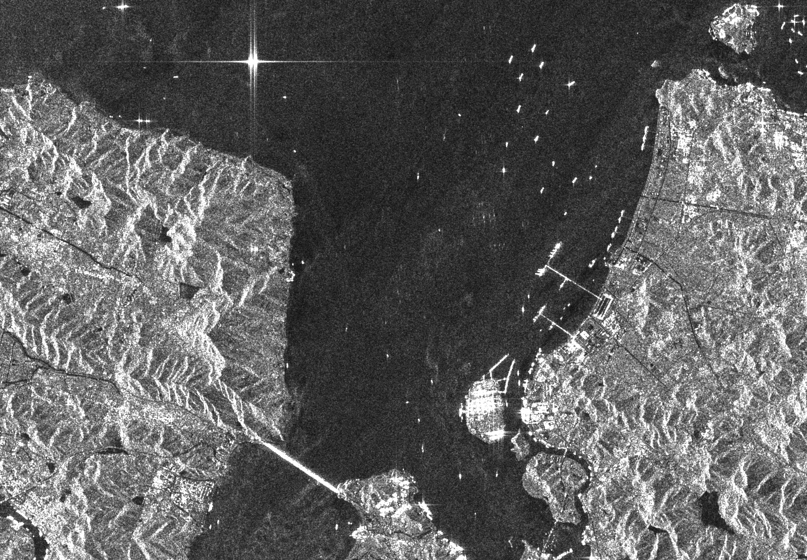
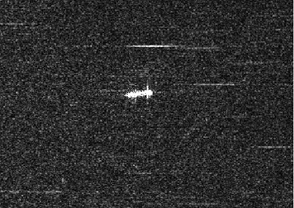
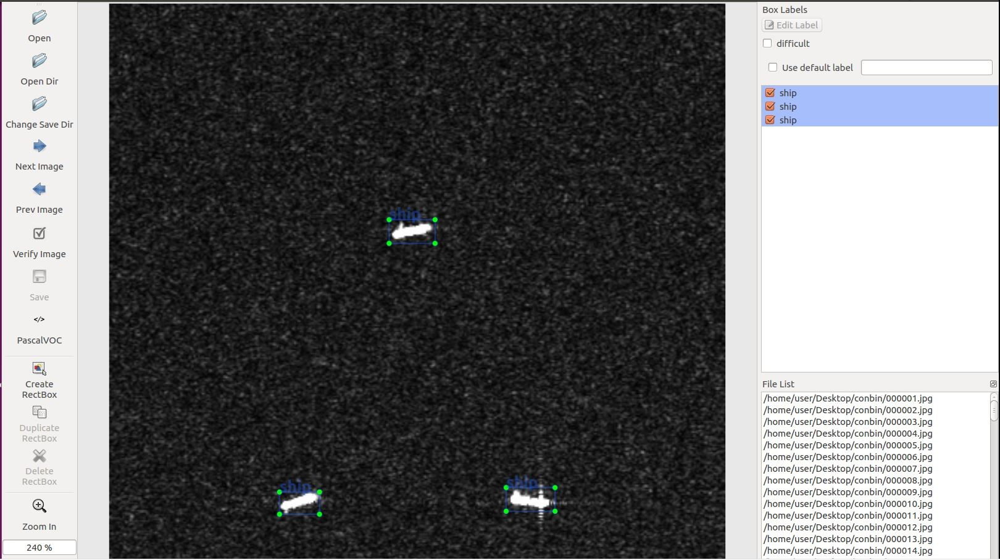
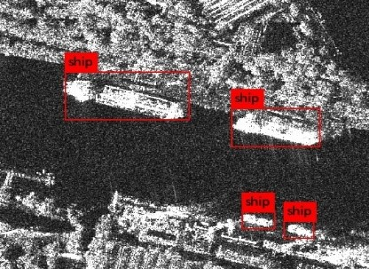

目前 SAR 船隻影像資料集資源非常稀少,來源為歐洲太空總署(ESA)Sentinel-1 衛星所提供的免費公開影像。 Sentinel-1 衛星運行 C 波段合成孔徑雷達,具有廣泛的覆蓋能力,並以中高解析度提供連續的全天候圖像。
本研究提出的 SOSD(Ship and Oil Spill Dataset)其衛星影像來源為 Sentinel-1 和 TerraSAR-X 衛星,拍攝目標區域通常為港口、運河和海洋,共有 53 張分佈大量船隻 的衛星影像,解析度在 1 公尺到 5 公尺之間,則影像大小在 1,000 × 1,000 到 15,000 × 15,000 之間,圖 3.1 為解析度 4,763×4,653 的 Sentinel-1 遙測影像。
本計畫的衛星影像來源為 Sentinel-1 和 TerraSAR-X 衛星。
在 SAR 遙測影 19像解析度過大之下,顯然不適合進行 CNN 的推論(Inference),此時將高解析度影像 切片成大小 544×544 的子影像,再由人工挑選出包含船隻的子影像,總共有 900 張, 隨機挑選資料集依照 7:2:1 的比例分成訓練集(Training Set) 630 張、驗證集(ValidationSet) 180 張和測試集(Test Set) 90 張作為卷積神經網路(Convolutional Neural Network , CNN)的訓練、驗證和測試數據。原始資料為tif檔，容量龐大，共有六張，以下為轉換成jpg格式的原始資料。
原始資料:

處理過後資料:

在使用深度學習來實作影像的物件偵測時,都會需要有大量的已知資料集,也就 是照片加上物件的所在位置以及物件的名稱,而通常若要準備這類的資料,初期都會 使用人工的方式來手動標註(Annotation)。在計畫中預計採用在 GitHub 上面 tzutalin 的 LabelImg 開源專案,它是目前最多人使用標註工具。 在船隻偵測任務中,必須先手動對每張圖片的船隻真實的邊界框和標籤進行標 註。對此 PASCAL VOC 已經為物件偵測提供標準化的標註數據集範例,透過 LabelImg 的圖形介面標註邊界框(Bounding-Box)和標籤(Label),LabelImg 會直接將標註訊 息轉化成為 XML 文件,即可以符合 PASCAL VOC 以及 ImageNet 所規範的 XML 格 式。標註船隻的示意圖如下圖所示,如此可以將標註樣本直接輸入到 CNN 進行訓 練,實現 End-to-End 的訓練。
船隻標記:

我們使用的是yoloy原作者Joseph Chet Redmon所fork出來的版本:
https://github.com/AlexeyAB/darknet
下載
git clone https://github.com/AlexeyAB/darknet.git
執行指令
./darknet detector map 'data檔' 'config檔' 'weights檔'
classes= 1 // 種類為1，只要辨識船隻
train = /home/jyx/Desktop/SSDD/train.txt // 訓練集路徑
valid = /home/jyx/Desktop/SSDD/test.txt // 驗證集路徑
names = ship/ship.names // 種類名稱: ship
執行
使用第11400次迭代的權重./darknet detector map ship/ship_SSDD_544.data ship/yolov2.cfg ship/yolov2_11400.weights
結果示意圖:
